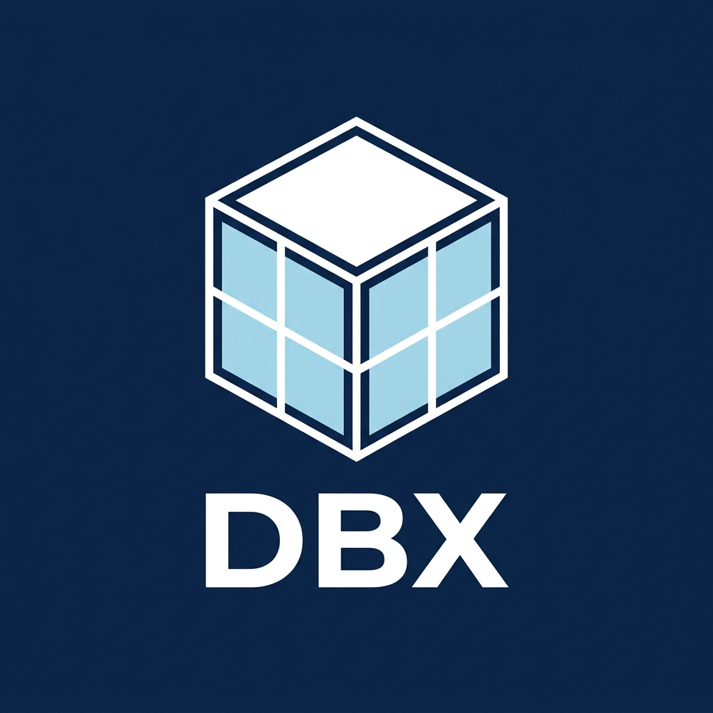
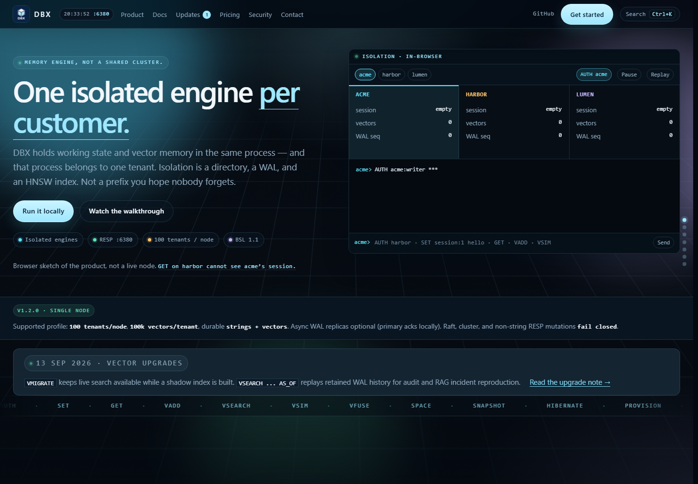
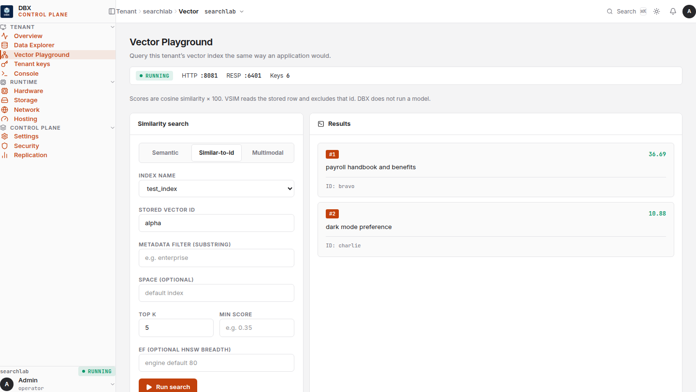
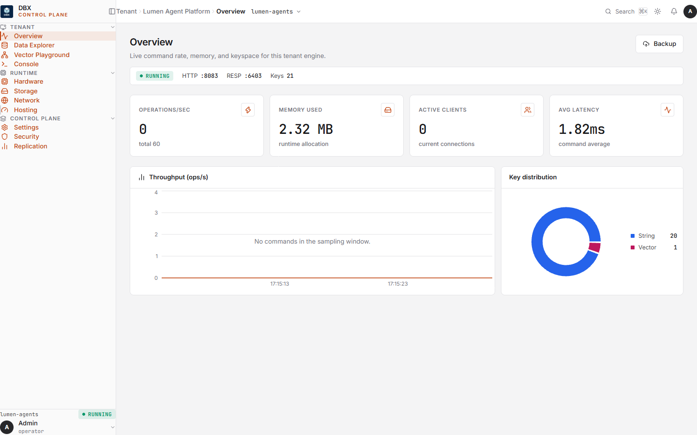
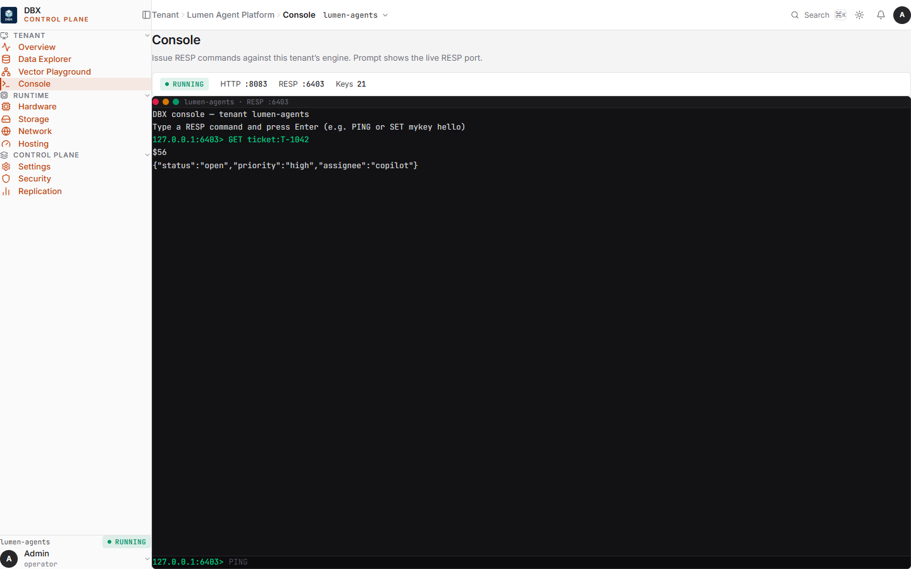
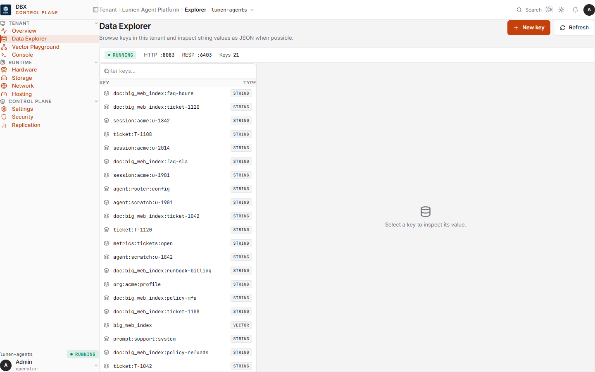
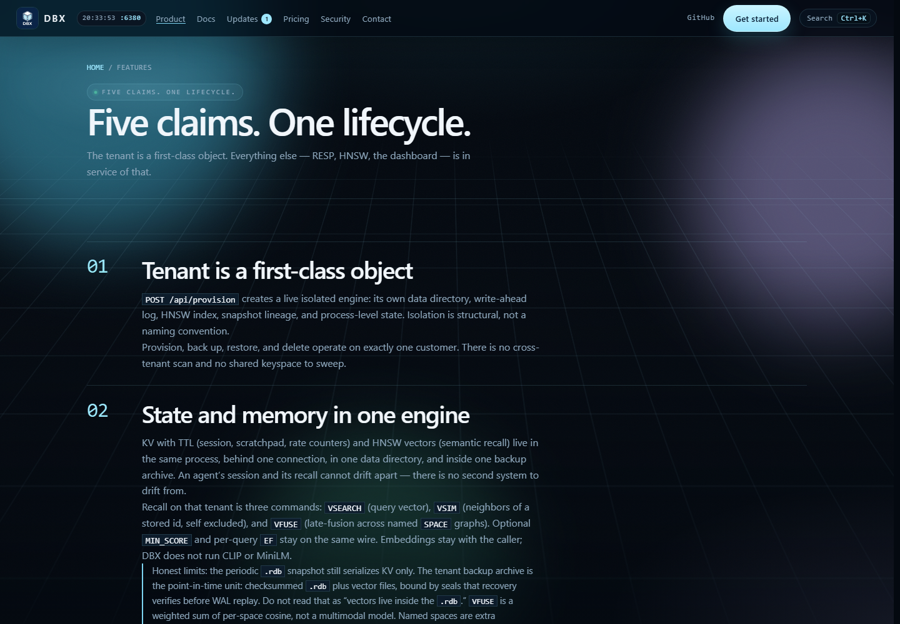

Keys carry identity
Tenant IDs are repeated in key prefixes and query paths.

A database for multi-tenant products
Durable application state and vector memory, organized around the tenant boundary and operated from one self-hosted product.

01 / THE PROBLEM
MULTI-TENANT MEMORYWhen customer boundaries live in application conventions, every workflow must remember them.
Tenant IDs are repeated in key prefixes and query paths.
Each service must apply the right customer scope.
Backup and deletion span scripts and storage conventions.
DBX DESIGN CHOICEMake the tenant the database boundary.
02 / ARCHITECTURE
ONE NODE · TENANT-SCOPED ENGINESAuthenticate once, then route each request to its tenant-scoped data engine.
RESP or HTTP API
Identity · route
03 / DATABASE FEATURES
ONE TENANT · TWO DATA MODESApplication state that is quick to read, update, and expire.
Caller-provided embeddings indexed for approximate nearest-neighbor retrieval.
VSEARCH and VSIMVFUSEEmbeddings come from the caller. DBX does not run embedding, image, or multimodal models.
04 / DEVELOPER EXPERIENCE
QUERY · INSPECT · TUNETry a tenant index, adjust search controls, and inspect ranked results from one workspace.

05 / OPERATOR EXPERIENCE
BUILT-IN DASHBOARD


06 / ISOLATION & SECURITY
BOUNDARIES BY DESIGNScoped roles, quotas, usage APIs, and tenant lifecycle actions are managed through the control plane.
Vector payload rows are mmap-backed and not encrypted by DBX. Use encrypted storage such as LUKS or fscrypt when at-rest confidentiality is required. Data is plaintext inside a running worker.
07 / DURABILITY & OPERATIONS
OPERATE ONE CUSTOMER AT A TIMEChecksummed WAL and checkpoints restore tenant data after restart.
Versioned tenant archives carry SHA-256 checksums across KV and vector state.
Build and promote a replacement vector index while the current index remains searchable.
Search retained vector state as of a timestamp for retrieval analysis.
Optional WAL replicas receive changes asynchronously; primary writes acknowledge locally.
Console, explorer, playground, tenant keys, and runtime views ship with the deployment.
08 / MEASURED PERFORMANCE
KEY-VALUE · LOOPBACK RESPWindows 10 · 18 logical processors · 15.6 GiB RAM
Loopback RESP · 27 Aug 2026
Measured on the Windows 10 certification host; this run does not certify Linux performance. Results vary with host, durability settings, workload, and client. Methodology: scripts/benchmarks/performance_analysis.md.
09 / MEASURED PERFORMANCE
VECTOR INDEX · SQ8 + SHARDED HNSW100,000 vectors × 128 dimensions · float32 brute-force recall baseline
27 Aug 2026 · Windows 10 · 18 logical processors · 15.6 GiB RAM. Linux CI reruns vector gates; this Windows host does not certify Linux performance. Methodology: scripts/benchmarks/performance_analysis.md.
10 / DEPLOYMENT & CAPACITY
CURRENT SUPPORTED PROFILEA self-hosted database with tenant-scoped application state, vector search, and an included operator dashboard.
Single-node v1 · no cluster or cross-node sharding · no SQL joins · no billion-vector claim.

A database boundary for every customer
Durable state, vector memory, and tenant-level operations in one self-hosted database.